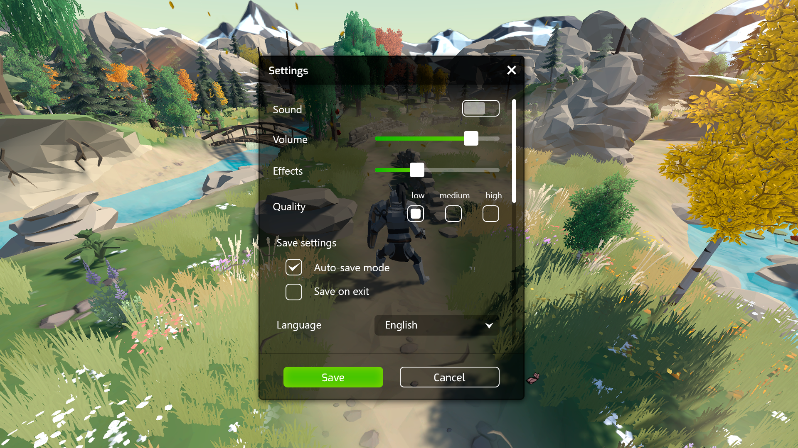
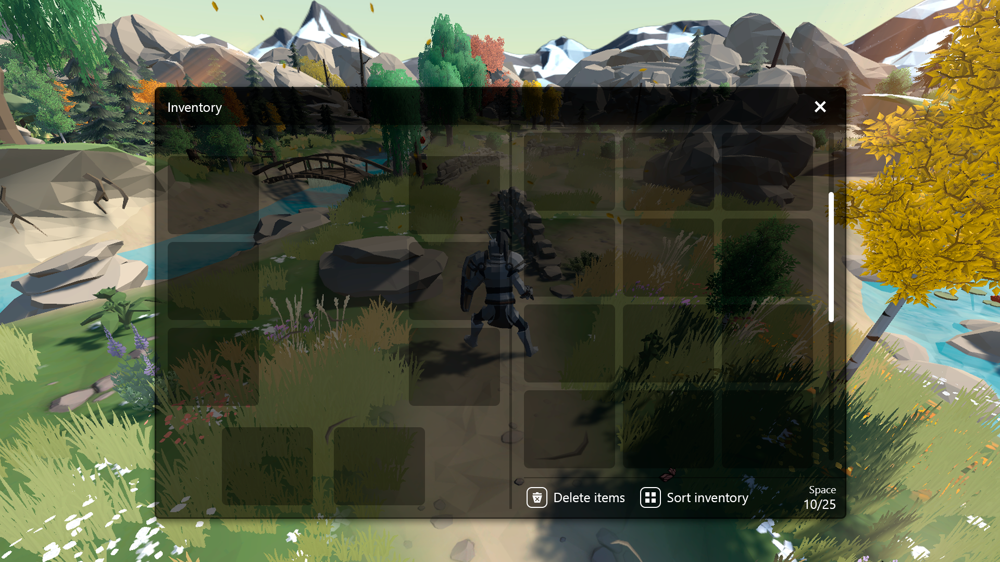

Canales de información
Arriba izquierda
Nada aparece en este canal
Arriba
En este canal en el HUD se puede visualizar la información de Jefes.
Arriba derecha
En este canal en el HUD aparecerán iconos de acceso rápido como de inventario, etc.
Centro izquierda
Nada aparece en este canal. Esta reservado para que dentro del juego el jugador pueda tener buena visibilidad en los laterales.
Centro
El canal principal del juego en este canal aparecen todos los menus como el menu de pausa, el inventario, opciones, etc.
Centro derecha
Nada aparece en este canal. Esta reservado para que dentro del juego el jugador pueda tener buena visibilidad en los laterales.
Abajo izquierda
En este canal aparecerá la barra de recursos del jugador, además de su vida y de los beneficios o perjuicios activos.
Abajo
Reservado para dar al jugador buena visibilidad desde la esplada del personaje dentro del juego.
Abajo derecha
En este canal aparecerán las habilidades y acciones disponibles para el jugador.
Modos de interfaz
-
Menu principal
Decisiones principales por las que se ve el menu principal como la siguiente imagen:
- Titulo arriba: El titulo esta en la parte superior de la pantalla para introducir al juego.
- Opciones del menu en el centro: Dado que es la unica información relevante en el menu se ha ubicado

-
Menu de opciones
Decisiones principales por las que se ve el menu de opciones como la siguiente imagen:
- Opciones de sonido arriba: Las opciones de sonido estan en la parte de arriba del todo para dar al jugador una mayor accesibilidad ya que es una de las opciones mas utilizadas.
- Calidad de imagen despues de opciones de sonido: Al igual que para las opciones de sonido es una de las opciones mas utilizadas por el jugador cuando empieza el juego.
- Boton de guardado para las opciones: Se añade una opcion de guardado para dar la posibilidad al jugado de revertir los cambios que ha realizado rapidamente.
 -
Menu de Inventario
Decisiones principales por las que se ve el menu de inventario como la siguiente imagen:
- Integración de inventario y equipamiento: El inventario y equipamiento estan integrados en la misma ventana para hacer mas facil al jugador gestionar el inventario y equipamiento.
- Botones de borrar objetos y organizar inventario: Para la gestion de inventario y la eliminacion de items que no quiere el jugador se han implementado estos botones.

HUD
Barras de vida y de reurso
Como es un juego sin mucha verticalidad, el jugador mantiene sus ojos en el suelo la gran mayoria del tiempo, por eso esta posicionado en la parte de abajo de la pantalla.
Bara de vida del jefe
Como es un juego sin mucha verticalidad, el jugador mantiene sus ojos en el suelo la gran mayoria del tiempo, por eso esta posicionado en la parte de abajo de la pantalla.
Botones de habilidad
Los botones de las habilidades del personaje esta ubicadas en la parte inferior derecha de la pantalla, ya que el juego no tiene mucha verticalidad y desde esa posicion podrá consultar perfectamente el enfriamiento restante de las habilidades.
Vida de los enemigos comunes y elites
Estas barras estarán ubicadas en la parte superior de la cabeza de los enemigos, en el caso de los enemigos elite, tendrán un marco un poco mas llamativo.
Botones de acceso rápido
Estos botones estarán ubicados en la parte superior izquierda de la pantalla para evitar reducir la visibilidad del jugador.